UX Design · Nonprofit · Accessibility
Redesigning a nonprofit's educational platform to improve curriculum discovery and admin analytics for K–12 STEM educators serving underrepresented communities.
Culturally Relevant Science (CRSci) is a nonprofit dedicated to creating innovative, affordable, and inclusive K–12 STEM curriculum — especially for students from underrepresented communities. They believe every student deserves to see themselves reflected in STEM education.
Outcome: Improved curriculum accessibility for teachers and introduced structured analytics for admins, reducing friction in both content discovery and performance tracking.
All curriculum materials were stored in a large, unstructured Google Drive — creating significant friction for both teachers and administrators.
Teachers struggled to locate updated lesson materials quickly
Content lacked organisation and visual consistency
Admins had no visibility into student performance data
Inefficient workflows caused delays and manual overhead
I contributed across the full design process — from secondary research on STEM representation to conducting user interviews, mapping journeys, building wireframes, and running usability testing that directly shaped our final design decisions.
Before speaking to users, we grounded ourselves in the broader landscape. The data made the stakes clear.
Research by NYU identified four core reasons Black and Latinx students lack persistence in STEM: significant knowledge gaps on entry, lack of early STEM exposure, existing knowledge not utilised in classrooms, and a weak connection between their lived experiences and STEM content. CRSci directly addresses all four.
We evaluated two comparable platforms to understand the landscape before designing.
We conducted interviews with K–12 science teachers and school administrators who use CRSci in their classrooms. The sessions surfaced consistent patterns around what's working, what's frustrating, and what educators need most from a digital hub.
"It's not boring… kids are automatically excited. They see CRSci as fun time because the content is so engaging."High School Science Teacher
"If you are any type of content-based teacher, you know you have to adapt content to fit your audience. This gives teachers that autonomy."Science Dept. Chair
"I like how engaging and relatable the material is to all children. Representation really influences how students connect with the content."6–12 Grade Science Teacher
"It's essentially a scripted lesson plan. Everything is provided — content, videos, subject-specific lessons — and it highlights representation."High School Principal
Can't edit or copy slides. The content is view-only and locked, preventing teachers from fixing errors or adapting for their students.
Google Drive ↔ Microsoft friction. Most school districts run on Microsoft, forcing teachers to log into personal Gmail accounts just to access CRSci materials.
No update notifications. Teachers only discovered new content by logging in and noticing a new unit had appeared — no alerts, no emails.
No feedback channel. Teachers found errors in presentations but had no way to report them or suggest improvements to the CRSci team.
Based on our interview synthesis, we developed a primary persona representing the experienced teacher who relies on CRSci daily but is frustrated by the current delivery system's limitations.
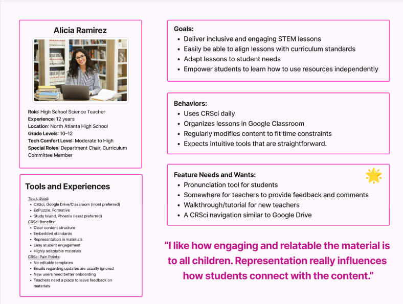
Primary persona — Alicia Ramirez, High School Science Teacher
Before designing any screens, we mapped the complete information architecture to establish how the admin and teacher flows would diverge from a shared entry point, and what each role would need access to at every stage.
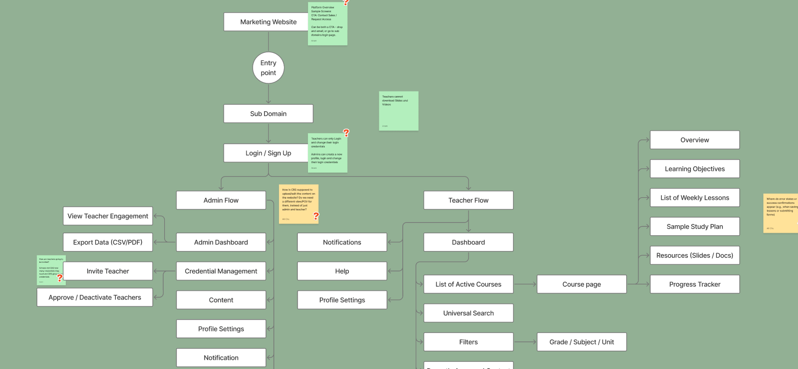
Full site map — admin flow (left) and teacher flow (right) branching from a shared login
We mapped Alicia's full journey across seven stages — from discovering CRSci through a PLC meeting to re-engaging weeks later. This surfaced emotional highs and lows, and revealed exactly where the platform was creating friction vs. delight.
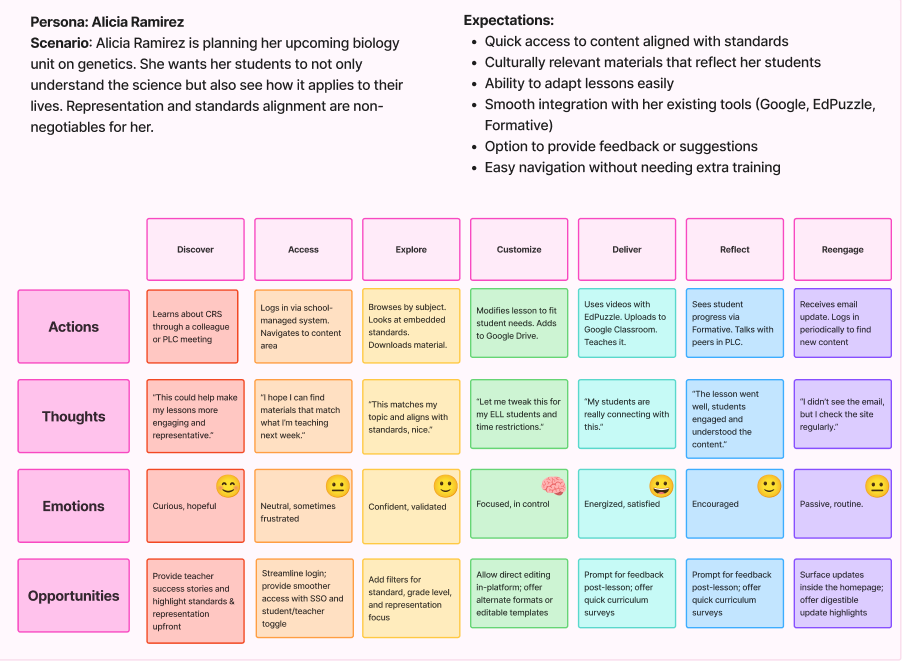
Journey map — Alicia's experience from first discovery to ongoing re-engagement
We storyboarded a key scenario — a teacher preparing next week's genetics lesson — to ground our design decisions in a realistic, end-to-end workflow.
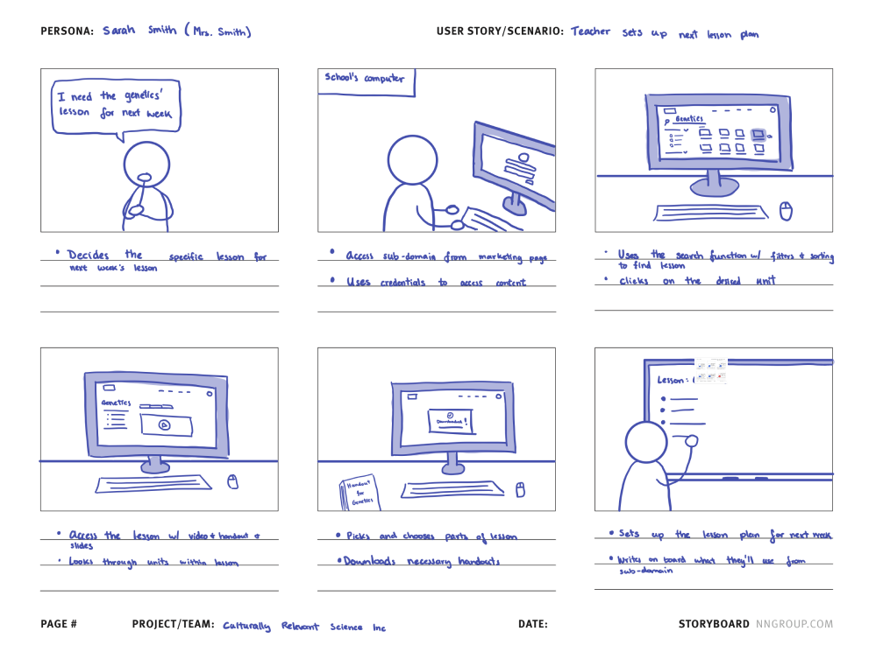
Storyboard — Sarah Smith (Mrs. Smith) sets up the following week's genetics lesson
Low and mid-fidelity wireframes let us establish navigation patterns and information hierarchy before investing in visual polish. Key early issues surfaced here — including unclear course browsing flows, missing progress indicators, and a lack of feedback on user actions.
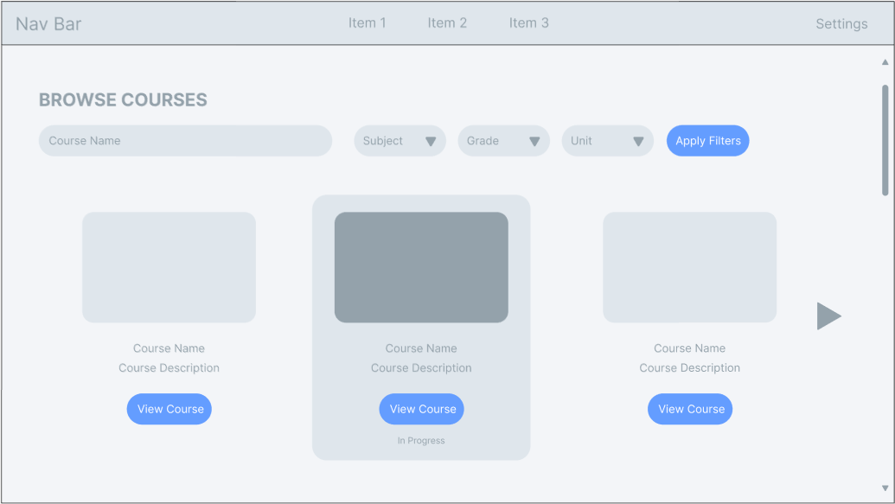
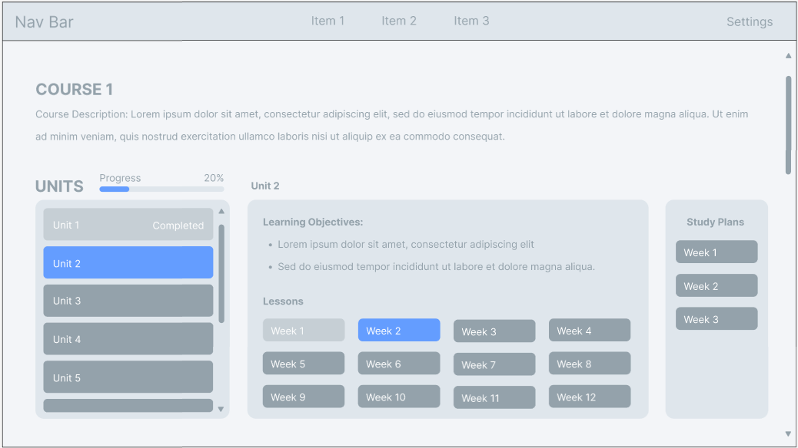
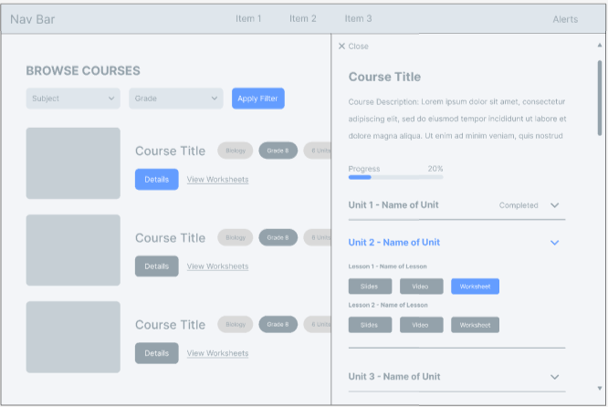
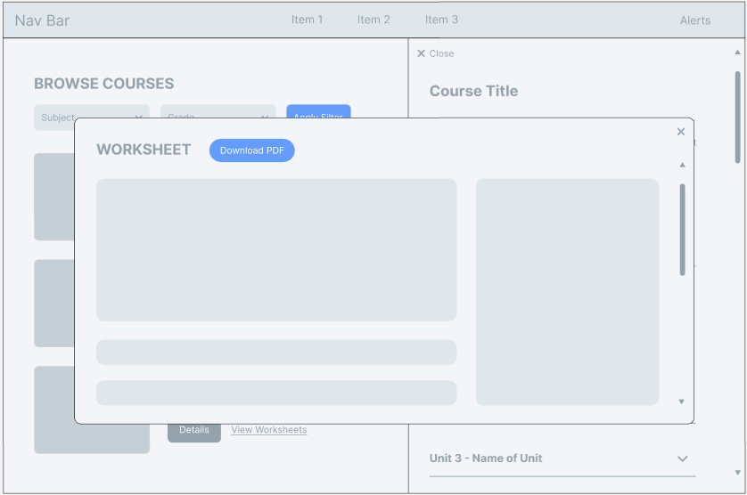
Low-fidelity wireframes — browse, course detail, sidebar navigation, and worksheet modal flows
The final interface delivers role-based experiences for both teachers and admins — with structured workflows, embedded standards, clear visual hierarchy, and accessible navigation throughout.
Admin — dashboard & engagement analytics
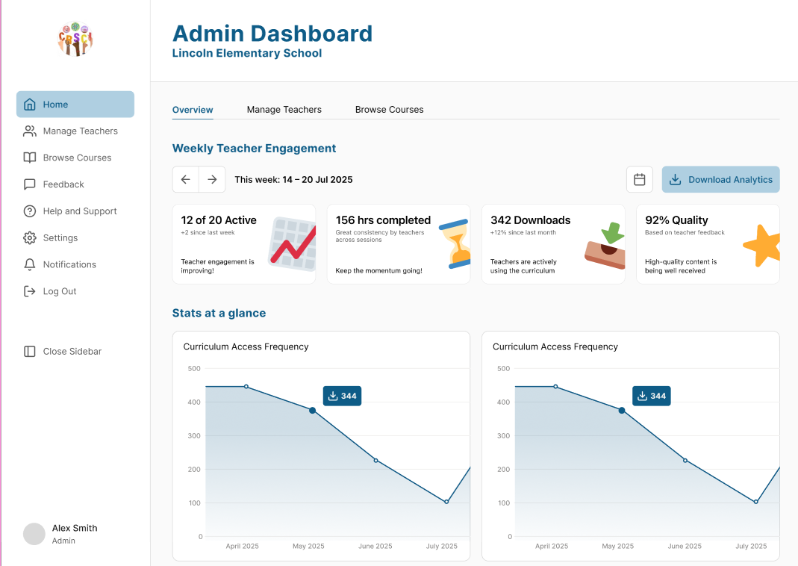
Admin — course management
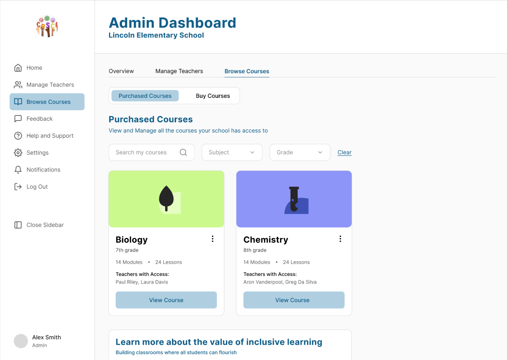
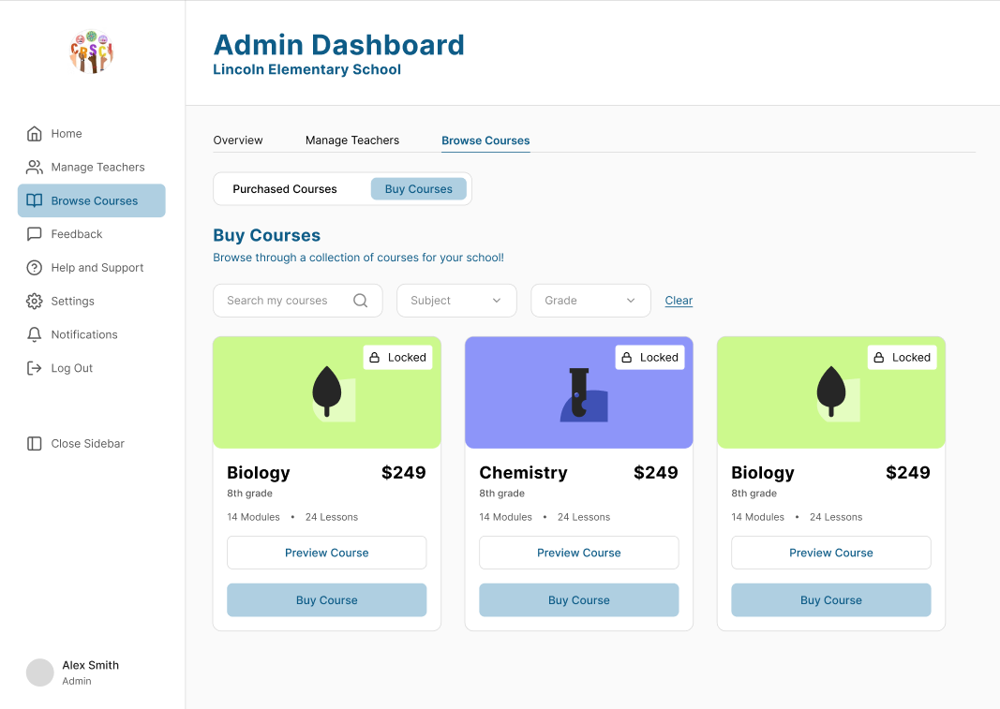
Teacher — curriculum access
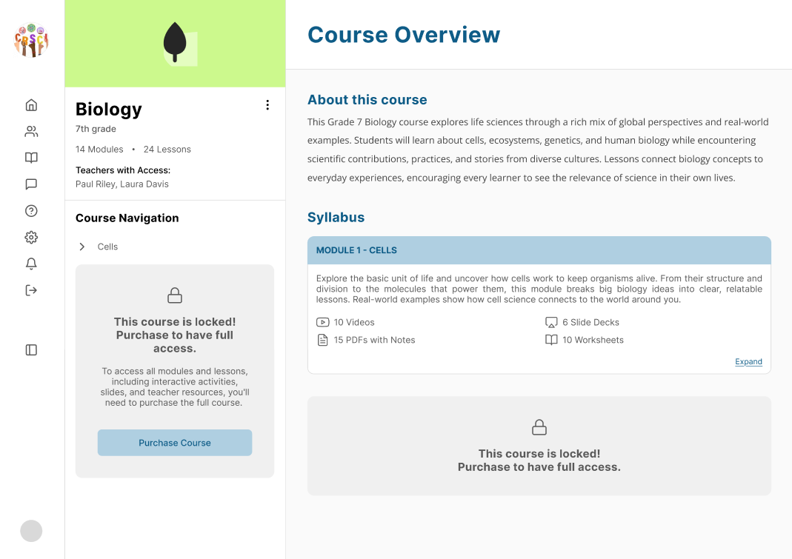
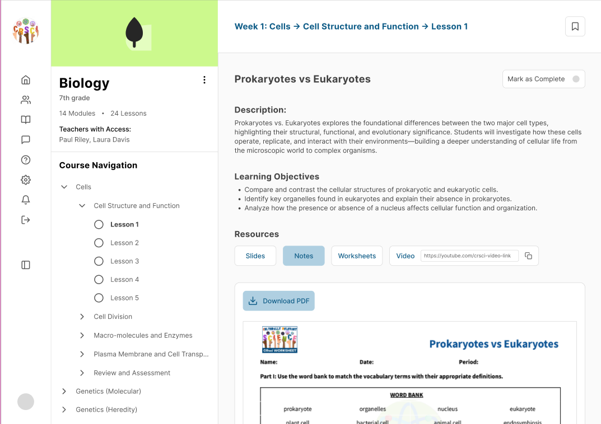
We ran two rounds of usability testing with real teachers and administrators, including video-based remote sessions. Participants completed four tasks: finding a lesson, downloading materials, managing teachers, and browsing new courses.
Reduced time to locate lesson materials for teachers
Improved clarity and consistency across curriculum content
Admins can now track teacher engagement and student performance at a glance
Scalable foundation for future features like feedback channels and pronunciation tools
This project strengthened my ability to design for real-world systems where organisation, clarity, and efficiency are critical. Working with a nonprofit client introduced constraints that required balancing user needs with practical implementation — and reminded me that the stakes of inclusive design are genuinely high when the end users are students who have historically been underserved.
I learned that improving user experience isn't always about adding features, it's often about restructuring information and simplifying workflows. The fact that teachers were finding workarounds (logging into personal Gmail, converting files manually) told me everything about where the system had failed them.